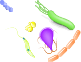

SISTEMA INMUNE GASTROINTESTINAL

El TGI juega un papel definitivo en la homeostasis del sistema inmune.
El sistema gastrointestinal es la principal ruta de contacto entre el individuo y el ambiente externo y está sobrecargado permanentemente de estímulos externos, algunas veces peligrosos como los patógenos o sustancias tóxicas, y en otros casos estímulos muy útiles como el alimento y la flora comensal.

La tarea del sistema inmune es la de mantener una respuesta inmune fuerte y efectiva frente a las bacterias patógenas que pueden invadir el cuerpo y causar daño tisular, y al mismo tiempo mantener la tolerancia a la mayoría de las bacterias que se denominan comensales y que ejercen una función benéfica dentro del intestino.
La importancia de la inmunomodulación a nivel gastrointestinal puede entenderse fácilmente si se tiene en cuenta que aproximadamente el 70% del total del sistema inmune se encuentra en el TGI y que en su lámina propia se localizan cerca del 80% de todas las células plasmáticas responsables de la producción de IgA.

Como resultado, en el sistema gastrointestinal tienen lugar, la respuesta inmune a los patógenos (bacterias, virus, hongos y parásitos), el reconocimiento y la tolerancia de los microbios comensales y la sensibilización y desensibilización a los alimentos. (2)
La discriminación entre la microflora “buena” y la “mala” se consigue mediante la interacción del epitelio intestinal con el tejido linfoide y las células inmunes que se encuentran en el intestino.
